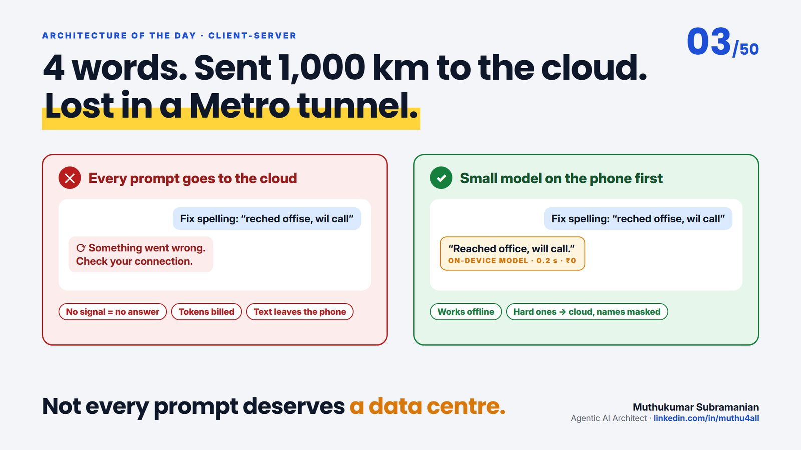

Not Every Prompt Deserves a Data Centre.
By Muthukumar Subramanian · Agentic AI Architect

You're on the Chennai Metro, somewhere under Anna Salai. You ask the app's shiny new AI assistant to fix the spelling in one message.
It spins. "Something went wrong. Check your connection."
To correct four words, your phone sent them to a data centre a thousand kilometres away, and the signal didn't make it out of the tunnel.
Your phone was more than capable of doing it. Nobody asked it to.
That's the client-server problem in the AI era: we built AI apps as if the client were still a dumb terminal.
The architecture today
Client-server is the oldest pattern on this list and still the most common. The client (a phone app, a browser, a desktop app) shows screens and collects input. The server holds the logic and the data. Every request goes over the network and every answer comes back.
When AI arrived, most teams kept the same shape. The client got a chat box, and every prompt, however small, went to a large model in the cloud. That means network latency on every keystroke, a per-token bill on every request, the user's private text leaving the device, and nothing at all when the network drops.
👉 [IMAGE: A-day03-2-in-article-architecture.png]
Caption: AI at both ends. A small model on the device, a large model on the server, and a router that decides. Grey is what you already have. Amber is new.
Where AI plugs in now: a small model on the device, first
Today's phones and laptops ship with capable small models, and you can call them from your app. Apple's Foundation Models framework gives iOS developers the on-device Apple Intelligence model in a few lines of Swift. On Android, Gemini Nano runs inside the AICore system service and is exposed through the ML Kit GenAI APIs for summarising, proofreading, rewriting and prompting. On laptops and office servers, Ollama and llama.cpp run open models locally.
So the first, low-risk move is a router on the device:
→ Small, private, frequent tasks stay on the phone. Fix the spelling, summarise this thread, classify this message, pull the amount and GSTIN out of a photographed bill.
→ Hard tasks go to the server. Long reasoning, large documents, anything that needs your company's tools or data.
→ Before anything leaves the phone, the small model strips what doesn't need to go. Names, phone numbers and account numbers get masked on the device.
Start with one feature. Move it on device, keep the cloud as the fallback, and measure what happens to latency, cost and complaints.
Where it's heading with agents
In two or three years, I don't think "client" and "server" will mean screen and brain any more. Both ends will run agents, and they'll talk to each other.
The device agent knows you: your messages, your calendar, your photos, your language. It keeps all that on the phone. The server agent knows the world and holds the tools: your bank's systems, the airline's inventory, the company's knowledge base. When you ask for something, the device agent decides what the server agent actually needs to know, sends only that, and acts on the answer.
Apple has already drawn this shape. Since WWDC 2026, the same Foundation Models code can route a request to the on-device model, to Apple's Private Cloud Compute, or to a third-party model such as Claude or Gemini. I expect every platform to end up with a three-step ladder like that: device, a private cloud tier, then the open cloud.
For India, this matters more than almost anywhere. Patchy networks, metered data, a dozen languages, and the DPDP Act making companies think twice before shipping personal data to a server. An agent that works offline in Tamil on a mid-range phone isn't a nice-to-have here. It's the product.
👉 [IMAGE: A-day03-3-in-article-routing-table.png]
Caption: The routing table. Five questions decide whether a request stays on the phone or goes to the server.
Watch it work
Four requests, one router. Watch where each one goes, and what happens when the signal drops.
👉 [GIF: A-day03-4-in-article-router.gif]
Caption: A day of requests through the device router. Most never leave the phone.
Pros
→ Speed: on-device answers come back without a network round trip
→ Cost: every request handled on the phone is one you don't pay a token bill for. If 60% of requests move on device, the cloud bill falls by roughly that much (illustrative)
→ Privacy and offline: personal text stays on the device, and the feature still works in the tunnel
Cons
→ Fragmentation: a flagship phone and a ₹9,000 phone are different platforms, and many devices can't run a model at all
→ Small models are small: they're weaker at reasoning and longer text, so you need honest quality tests per task, on real devices
→ Two places to fail: you now version, test and monitor a model on millions of devices as well as one in the cloud
The opportunity
Every company that rushed AI into its app last year is now looking at the cloud bill. Many of those requests never needed a large model.
That's the market: hybrid edge-cloud routing. Products that decide, per request, whether it runs on the device, in a private cloud or in a public model, and that prove the savings. Services that audit an app's AI traffic and move the easy 60% on device. And on-device AI apps built for Bharat: offline-first, Indian languages, mid-range phones. The buyers are product heads and CFOs who want lower AI bills, and compliance teams who want less personal data leaving the phone.
Tools to try
Apple Foundation Models framework for iOS and macOS · Gemini Nano through the ML Kit GenAI APIs on Android · Ollama or llama.cpp to run open models on laptops and office servers · Microsoft Foundry Local for Windows · any cloud model behind your router: OpenAI, Claude, Gemini or Bedrock.
Your turn 👇
If you were building an AI feature tomorrow, would you start on the device or in the cloud? One word.
Tag the person in your team who'd have to explain this month's AI cloud bill.
Day 3 of 50 · follow along. Tomorrow: Microservices, with one agent per business domain.